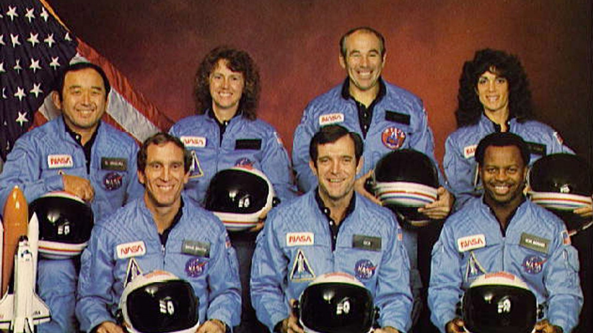

Challenger tragedy
The nation was stunned on Jan. 28, 1986, as it watched news coverage of the Challenger space shuttle launch gone horribly wrong. Only 73 seconds after liftoff, a malfunction caused the spacecraft to break apart, leaving a tangle of contrails in the clear blue sky as the crew of seven plummeted to their deaths.
Thirty-five years later, Carmel resident Andy Klotz remembers the accident as a defining moment for the U.S. and himself because he saw it happen firsthand. Klotz, now 64, was a Rose-Hulman Institute of Technology grad working as a programmer analyst for MOD-SPACE subcontractor Computer Sciences Corp. in Cape Canaveral at the time and captured amateur photos of the incident when he took a break to watch the late morning launch.
It didn’t take him long to realize something was terribly wrong, but his knowledge of the shuttle’s emergency systems briefly gave him hope the crew had survived.
“I was hoping that I would see the orbiter looping around and coming back and making its way to the landing strip,” he said. “It became pretty evident the orbiter wasn’t coming back, and that meant everything was falling into the ocean.”
Indianapolis resident Bob Green also was working for CRC in Cape Canaveral at the time of the accident. The Indiana University graduate stepped outside of his home 20 miles from the launch site to watch the event and remembers having a similar brief feeling of hope that the accident wasn’t as bad as it seemed.
“I thought maybe the orbiter had separated and we’d see it looping back around,” he said. “One of the projects I had worked on was a vectoring system for chase plans for when the orbiter would return to Florida and land. I knew that was a thing, but it didn’t happen.”
Klotz went back to work after the accident, but remembers the day not being especially productive as he and his co-workers tried to process what had happened. The accident had long-term implications for him and Green, too, as their team was working on a system being considered for a future launch. After the accident, the system was deemed too dangerous, so the plans were scrapped, and they moved on to other projects.
Klotz, who grew up on a farm that has now been developed as a neighborhood in Fishers, returned to Indiana to be near family in 1993 after serving as a missionary in Austria for four years. He’s now a maintenance engineer with Mooresville-based Thiesing Veneer.
Green, who now works for ADP, returned to the Hoosier state in 1992. He said witnessing the accident and its aftermath has made him “more safety conscious,” especially in his work.
Klotz said the Challenger accident is one of several national events that left a major impact on his life.
“This, plus 9/11, plus the Kennedy assassination are anchors in time that are strong memories that you know something really negative and undesirable happened,” he said. “It gives you the opportunity to look at what we’re doing and why we’re doing it and if we should continue doing the things we’re doing.”
Even after many years of working in the aerospace industry, he still finds launches “awe-inspiring” and still looks for opportunities to view them.
“Humans can’t fly,” he said. “So, to be part of something where a big undertaking is done, it does have a certain amount of good pride associated with it.”
For Carmel resident Andy Klotz, the launch of the Challenger space shuttle initially seemed to be just like any of the many others he’d witnessed — with a few important differences.
Klotz, who worked at Cape Canaveral at the time of the disaster, said there seemed to be increased pressure to launch that day because the mission had already experienced several delays. The mission had already received more public attention than most because the crew included the first school teacher selected to travel to space.
“On this day, it was going forward, unless a manager made a big scene and said it’s not,” Klotz said. “There was a lot of subtle pressure to go ahead and have the launch, unless you were sure your system was going to fail.”
Klotz said he doesn’t believe any one person should be blamed for the accident. He is convinced systemic problems led to the disaster.
An investigation of the accident concluded that unusually cold temperatures had caused a seal to weaken and fail, leading to a leak and explosion of the external fuel tank.